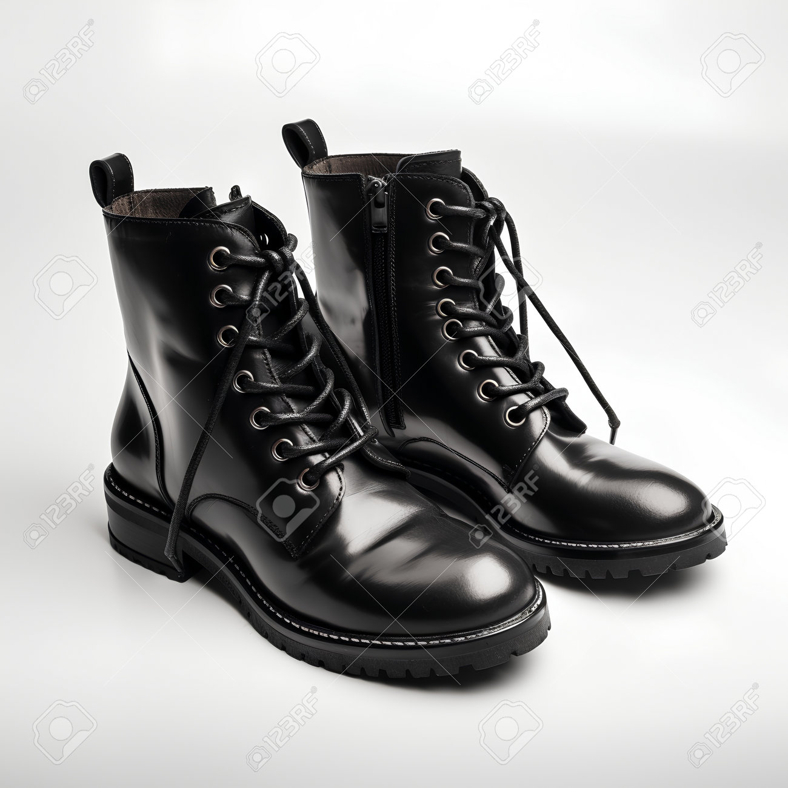

Colección Invierno 2025: Comodidad y Estilo
Descubre nuestras botas de invierno diseñadas para combinar la máxima comodidad con la elegancia que mereces. Fabricadas con cuero genuino y un forro cálido, son perfectas para protegerte del frío sin renunciar a tu estilo.
¡Explora cada detalle en 3D antes de decidirte!
